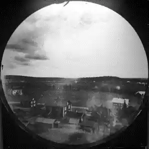
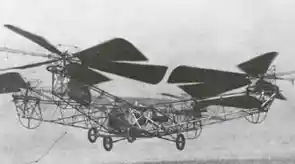

November 12, 2023
History and Development of UAV Technology
UAVs are becoming more common and well-known among the public, and in the future, they may be widely used for a variety of tasks. However, many people are unaware that UAVs are a relatively old concept that has taken a long time to develop into the well-developed machines known as drones that we have today. The first unmanned aerial vehicles (UAVs) appeared in the 1780s. This blog will discuss the earliest UAVs and how they evolved to where we are today, including the first weaponized UAVs and the technology's prospects.
The first ever UAV
The Montgolfier brothers in France created the first UAV when they created the first hot air balloon and demonstrated it in public. This isn't usually what people think of when they think of UAVs, but because the hot air balloon was unmanned and flying, it qualifies as a UAV (unmanned aerial vehicle). This just goes to show how old UAV technology is, as well as how far it has progressed since then. It also demonstrates the meaning of the term UAV and how it can mean something very different from what the public believes it to be.
UAVs have been weaponized over the years
Hot air balloons, like the first UAV, were also the first form of military use of UAVs. In 1849, the Austrian army stored bombs in hot air balloons for their attack on Venice. The bomb was to be dropped after a certain amount of time, which was accomplished through the use of time fuses. Although the attack was not successful due to factors such as wind, it was the first time UAVs were used in a military attack.
After the Wright brothers invented planes in 1903, military UAVs began to resemble the military drones of today. Because victory in WWI required innovation, the war had a significant impact on the development of UAVs. The American Kettering Bug torpedo, a pilotless plane carrying a bomb that would crash and explode, was the most notable development. The old machine used a gyroscope to guide itself to the point where it would crash and explode.
The British also developed a UAV called the Queen Bee in 1935 to aid in the training of Air Force pilots, which was a major issue at the time. The Queen Bee enabled pilots to receive proper training in dogfights while causing no harm to humans. It was the first modern drone and was controlled by a radio controller. Indeed, the Queen Bee was so successful that Americans were inspired by it and began developing similar technology. The Americans went on to develop the Curtiss N2C, a radio-controlled UAV, in 1937. Its limitations included the need to fly a crew nearby in a separate aircraft from where they could control the Curtiss.
The Americans went on to develop the Curtiss N2C, a radio-controlled UAV, in 1937. Its limitations included the need to fly a crew nearby in a separate aircraft from where they could control the Curtiss.
Drones were used by both the Axis and Allied forces to deliver massive blows to each other during WWII. The majority of the drones used gyroscope readings to control pitch and yaw, and barometer readings to control altitude. Following WWII, the Americans extensively used drones in the Vietnam War. The only difference was that they were mostly used for reconnaissance this time.
Even after all of the advancements mentioned above, drone technology has advanced significantly, and drones such as the iconic predator (developed in 1996, so still relatively new) have been developed. Today's top-tier UAVs include the US Gray Eagle and the Zephyr Stratospheric UAV, which is designed to orbit the Earth in the stratosphere. Stealth technology has also been developed, and the basic purpose of a military UAV, scouting and attacking, has greatly improved to the point where UAVs can deliver strikes halfway around the world.
From a strictly military standpoint, UAVs have the potential to save the lives of military pilots both in training and on the battlefield. Missions that previously required the pilot to risk his life can now be performed by machines, and recon missions can be much more time and cost-efficient because UAVs do not require additional fuel for passengers. To say that UAV technology has changed the way the Air Force operates is an understatement.
The development of UAVs for photography and scouting
One of the most common uses for UAVs, both now as well as back when they were relatively new technology, is in photography. Although the photography applications may have shifted from mostly military scouting missions to quite a lot of cinematography as cameras were further developed and became more common, UAVs for photography are still important to this day.
The first practical idea to attach a camera to a UAV was in 1896 when Alfred Nobel filed a patent to attach a camera to a rocket and launch it. The camera would take a picture using a time fuse and parachute back to the ground where the film could be used to produce images. The problem with this technique was that only one photo could be taken per launch.
The British used UAVs to scout behind enemy lines multiple times from an early time. Notably, the first time this was done was in the battle of Neuve Chapelle during the First World War. The Americans also used similar technology for reconnaissance missions later on in World War 2 and in the Vietnam War.
One of the biggest examples of camera drones include FPV drones which were developed by enthusiasts in the 2010s. This developed into the fully-fledged sports we see today. FPV drones show us how far drone photography has come since it has to transmit video feeds to the headset in real-time.
The Drone Enthusiast Community
All the points mentioned previously have spoken extensively on the development of drones on an industrial level by the military. While those UAVs show the peak of the technology due to extensive funding, the drone community is an integral part of UAVs as a whole. The community started when people developed an interest in the technology that they saw and eventually, people managed to make innovations to drones for their benefit such as making FPV drones or using drones for photography as mentioned above.
Multirotor UAVs
When most people think of drones, the first thing that comes to mind is either the Gray Hawk or multirotor UAVs. The military developed these drones to allow for vertical take-off and landing. The prototypes of this type of drone were built in 1907. Because opposing arms easily balanced each other, the early multirotor UAVs were mostly quadcopters (consisting of four motors and four propellers). However, computers did not exist at the time, and balancing a multirotor UAV was extremely difficult due to the difficulty of having the centre of mass directly in the centre of the copter. As a result, these types of drones were not further developed until computers became powerful enough to self-stabilize them. However, these multicopters are extremely useful nowadays because they are less expensive to build and can perform tasks such as vertical take-off and landing as well as providing extra maneuverability.
Scope of UAVs
Currently, UAV technology has advanced enough to the point where they are being used for many different purposes worldwide which includes military purposes like they were used conventionally to photography and helping put out wildfires. Drone technology still has a long way to go since even the most advanced drones in the world still face many problems. For example, drones may be able to map routes themselves in the future using AI. In addition to this, the technology may become cheaper. Either way, UAVs will only become more common in the future and be used more widely for purposes such as delivering packages.
Conclusion
To sum it all up, UAV technology has come a long way since it began in the form of a hot air balloon, and it is still an ever-innovating technology and may be so for a long time. The performance and weaponizing of UAVs were vastly innovated by militaries aiming to gain the upper hand in wars, but a lot of great ideas were sparked by bright minds which allowed people to gain access to entertainment in the form of sports such as FPV drone racing as well as making it easier to perform tasks such as aerial photography.